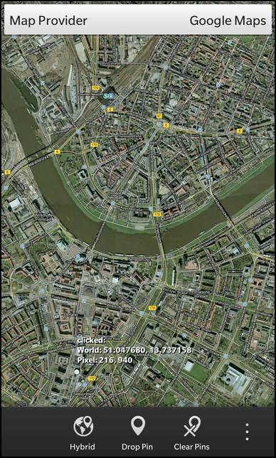

Files:
The Web Map View example let the user browse maps from different providers (Google, Bing and OpenLayers), put pins on the map at the current location, clear all pins from the map and switch between different view modes (road, satellite, hybrid, etc.).

In this example we'll learn how to use a WebView to integrate web content into a native application and how to let the application communicate with the web content.
The UI of this sample consists of a WebView inside a ScrollView as central element, which is used to display the web content. At the top of the screen a DropDown is available to switch between the different providers of the web maps. On the action bar at the bottom and in the action side bar, there are actions to switch the view mode of the current map, put a pin at the center of the map, clear all pins or move the center of the map to a predefined place.
While the business logic for the communication between the web content and the native application is implemented in JavaScript, the logic for switching the map providers is encapsulated in the C++ class WebMaps which is exported to QML as '_webMaps'.
The WebView is encapsulated in a separated component (Map.qml), which is instantiated in main.qml
Map { horizontalAlignment: HorizontalAlignment.Center verticalAlignment: VerticalAlignment.Top id: map }
The DropDown to specify the current map provider is placed on top of it. Currently three providers are supported, so the DropDown contains three Option elements. As values for the Options we use the Provider enums from the WebMaps class. Whenever the user selects a new provider, the associated enum is set on the 'currentProvider' property of the WebMaps class. This will trigger a reload of the web map as we'll see below.
DropDown { horizontalAlignment: HorizontalAlignment.Fill verticalAlignment: VerticalAlignment.Top title: qsTr("Map Provider") Option { text: qsTr("Google Maps") imageSource: "asset:///images/googlemaps.png" value: WebMaps.GoogleMaps selected: true } Option { text: qsTr("Open Layers") imageSource: "asset:///images/openlayers.png" value: WebMaps.OpenLayers } Option { text: qsTr("Bing Maps") imageSource: "asset:///images/bingmaps.png" value: WebMaps.BingMaps } onSelectedValueChanged: _webMaps.currentProvider = selectedValue }
Like the current map provider, the current view mode is also managed by the WebMaps class. It provides the title and the ID of the current view mode as properties and offers the slot 'nextViewMode()' to switch to the next available view mode. When the last view mode is reached, it jumps back to the first one.
The first ActionItem in the action bar uses this functionality. It's 'title' property is bound against the 'viewModeTitle' property of the WebMaps, so whenever the view mode changes, the title of the action is updated automatically. If the user triggers the action, the nextViewMode() slot is invoked and afterwards the new view mode (as reported by WebMaps) is set on the Map object.
ActionItem { title: _webMaps.viewModeTitle imageSource: "asset:///images/map.png" ActionBar.placement: ActionBarPlacement.OnBar onTriggered: { _webMaps.nextViewMode() map.setMapType(_webMaps.viewMode); } },
All the other ActionItems simply call functions on the Map object whenever they are invoked. The real work is done by the implementation of the functions then.
ActionItem { title: qsTr("Manhattan") imageSource: "asset:///images/pin.png" ActionBar.placement: ActionBarPlacement.InOverflow onTriggered: { map.setCenter(40.790907, -73.965334); } }, ActionItem { title: qsTr("Drop Pin") imageSource: "asset:///images/pin.png" ActionBar.placement: ActionBarPlacement.OnBar onTriggered: { map.createPushPin(map.center[0], map.center[1], qsTr("I am a Pin")); } }, ActionItem { title: qsTr("Clear Pins") imageSource: "asset:///images/clearpin.png" ActionBar.placement: ActionBarPlacement.OnBar onTriggered: { map.removeAllPins(); } }
The Map component consists of a ScrollView that embeds a WebView. The latter displays the web content as delivered by the map providers. Since we want to load a different HTML content depending on the current provider, the content is assembled on the fly at runtime by loading a template page (map.html) and replace some placeholders. This logic is done inside the WebMaps class and the result is accessible through its 'pageContent' property.
WebView { id: qwvMapView html: _webMaps.pageContent
We have seen that whenever the user activates one of the ActionItems, functions from the Map component are invoked. These functions just forward the call to the JavaScript context of the web content. This is done with the WebView.evaluateJavaScript method, which takes a valid JavaScript code snippet as parameter and executes it inside the WebView's context. All the JavaScript methods we call here are implemented inside separated JavaScript files (e.g. google_map.js), which are included by the pre-processed HTML page content.
function setZoom(zoom) { var script = "setZoom(" + zoom + ")" qwvMapView.evaluateJavaScript(script, JavaScriptWorld.Normal); } function zoomIn() { var script = "zoomIn()" qwvMapView.evaluateJavaScript(script, JavaScriptWorld.Normal); } function zoomOut() { var script = "zoomOut()" qwvMapView.evaluateJavaScript(script, JavaScriptWorld.Normal); } function setCenter(lat, lon) { var script = "setCenter(" + lat + "," + lon + ")" qwvMapView.evaluateJavaScript(script, JavaScriptWorld.Normal); } function setMapType(mapType) { var script = "setMapTypeId(" + mapType + ")" qwvMapView.evaluateJavaScript(script, JavaScriptWorld.Normal); } function createPushPin(lat, lon, title) { var script = "createPushPin(" + lat + "," + lon + "," + "\"" + title + "\"" + "," + "\"local:///assets/images/on_map_pin.png\"" + ")" qwvMapView.evaluateJavaScript(script, JavaScriptWorld.Normal); } function removeAllPins() { var script = "removeAllPins()"; qwvMapView.evaluateJavaScript(script, JavaScriptWorld.Normal); }
While 'evaluateJavaScript' is used to pass data from the native application to the web content, another mechanism is used to pass data in the other direction. The WebView provides a special 'navigator' object in its JavaScript context, which contains methods to send messages from the web content to the native application. Inside the native application the 'messageReceived()' signal can be caught to react to these messages.
In our application the web content can send three different messages
Inside the signal handler we check the type of the message and process the payload data accordingly
onMessageReceived: { if (message.data.indexOf("centerChanged") >= 0) { var data = message.data.substring(message.data.indexOf(":") + 1); var values = data.split(","); center = [ values[0], values[1] ]; centerPixel = [ values[2], values[3] ]; label.text = qsTr("centerChanged:\nWorld: %1, %2\nPixel: %3, %4") .arg(center[0].substr(0, 9)).arg(center[1].substr(0, 9)) .arg(Math.round(x)).arg(Math.round(y)); labelPosition.positionX = centerPixel[0]; labelPosition.positionY = centerPixel[1]; } else if (message.data.indexOf("clicked") >= 0) { var data = message.data.substring(message.data.indexOf(":") + 1); var values = data.split(","); var lat = values[0]; var lon = values[1]; var x = values[2]; var y = values[3]; label.text = qsTr("clicked:\nWorld: %1, %2\nPixel: %3, %4") .arg(lat.substr(0, 9)).arg(lon.substr(0, 9)) .arg(Math.round(x)).arg(Math.round(y)); labelPosition.positionX = x; labelPosition.positionY = y; } else if (message.data.indexOf("markerClicked") >= 0) { var data = message.data.substring(message.data.indexOf(":") + 1); var values = data.split(","); var lat = values[0]; var lon = values[1]; var x = values[2]; var y = values[3]; label.text = qsTr("markerClicked:\nWorld: %1, %2\nPixel: %3, %4") .arg(lat.substr(0, 9)).arg(lon.substr(0, 9)) .arg(Math.round(x)).arg(Math.round(y)); labelPosition.positionX = x; labelPosition.positionY = y; } }
For all three types of messages we extract the latitude and longitude, the x and the y coordinates and assemble a text that we set on a custom Label. Additionally we change the position of the Label to the retrieved x/y coordinates.
The Label is located in an AbsoluteLayout on top of the WebView, so it acts as an overlay.
Label { id: label layoutProperties: AbsoluteLayoutProperties { id: labelPosition } multiline: true textStyle { base: SystemDefaults.TextStyles.SmallText color: Color.Black fontWeight: FontWeight.Bold fontFamily: "courier" } }
To allow the user to zoom in and out easily, we register a PinchHandler on the WebView. Whenever the user activates the gesture, we check whether a given threshold is exceeded and in that case call the zoomIn() or zoomOut() functions of the Map component.
gestureHandlers: [ PinchHandler { property variant initial onPinchUpdated: { if (! initial) { initial = event.distance; } if ((event.distance - initial) / 50 > 1) { initial = event.distance; root.zoomIn(); } else if ((event.distance - initial) / 50 < -1) { initial = event.distance; root.zoomOut(); } } } ]
The JavaScript files, which are included by the pre-processed HTML page content, contain the glue code to interact with the provider-specific JavaScript maps API.
Inside 'google_map.js' for example, we have the function 'initMaps()' defined, which is executed as soon as the WebView has been loaded the page content. This function uses the Google Maps JS API (https://developers.google.com/maps/documentation/javascript/) to create a map inside the 'map_canvas' div element. Additionally it registers two callback functions for the 'click' and 'center_changed' event.
function initMaps() { console.log("init GoogleMaps"); var myLat = 43.449766; var myLong = -80.406096; var myLocation = new google.maps.LatLng(myLat, myLong); var mapOptions = { zoom : 14, center : myLocation, mapTypeId : google.maps.MapTypeId.HYBRID, mapTypeControl : false, zoomControl : false, streetViewControl : false, styles : [ { featureType : "poi", elementType : "labels", stylers : [ { visibility : "off" } ] } ] }; googleMap = new google.maps.Map(document.getElementById("map_canvas"), mapOptions); google.maps.event.addListener(googleMap, 'click', clicked); google.maps.event.addListener(googleMap, 'center_changed', centerChanged); console.log("Done init GoogleMaps"); }
These two callback functions use the 'navigator' object from the WebView to send a message to the native application.
function clicked(event) { var point = convertPoint(event.latLng); navigator.cascades.postMessage("clicked:" + event.latLng.lat() + "," + event.latLng.lng() + "," + point.x + "," + point.y); } function centerChanged() { var point = convertPoint(googleMap.getCenter()); navigator.cascades.postMessage("centerChanged:" + googleMap.getCenter().lat() + "," + googleMap.getCenter().lng() + "," + point.x + "," + point.y); }
All the other functions simply call the provider specific methods of the map API.
function zoomIn() { googleMap.setZoom(googleMap.getZoom()+1); } function zoomOut() { googleMap.setZoom(googleMap.getZoom()-1); }
The WebMaps class encapsulates the logic to switch between map providers or switch between the different view modes of one provider.
The active map provider is accessible through the 'currentProvider' property. Whenever this property is changed, the currentProviderChanged() signal is emitted. The same signal is used by the 'pageContent' property, so the UI will reread the value of the 'pageContent' property on every provider change. The two properties 'viewModeTitle' and 'viewMode' allow the UI to access the current view mode title of the current provider map and the view mode identifier, which is used as parameter for the map JavaScript API.
class WebMaps : public QObject { Q_OBJECT Q_ENUMS(Provider) // The map provider that is currently used Q_PROPERTY(Provider currentProvider READ currentProvider WRITE setCurrentProvider NOTIFY currentProviderChanged) // The html page content for the current map provider Q_PROPERTY(QString pageContent READ pageContent NOTIFY currentProviderChanged) // The provider specific view mode title Q_PROPERTY(QString viewModeTitle READ viewModeTitle NOTIFY viewModeChanged) // The provider specific view mode identifier Q_PROPERTY(QString viewMode READ viewMode NOTIFY viewModeChanged) public: // Available map providers enum Provider { GoogleMaps, BingMaps, OpenLayers }; WebMaps(QObject *parent = 0); public slots: void nextViewMode(); signals: // The change notification signals of the properties void currentProviderChanged(); void viewModeChanged(); private: // The accessor methods of the properties Provider currentProvider() const; void setCurrentProvider(Provider provider); QString pageContent() const; QString viewModeTitle() const; QString viewMode() const; Provider m_currentProvider; QMap<Provider, QVariantMap> m_providerData; int m_currentViewModeIndex; };
Inside the constructor, the current provider is preset to 'Google' and we use the first available view mode.
WebMaps::WebMaps(QObject *parent) : QObject(parent) , m_currentProvider(GoogleMaps) , m_currentViewModeIndex(0) {
Afterwards we fill the m_providerData structure, which contains all the parameters that differ between the map providers:
// Google Maps { QVariantMap entry; entry["scriptFile"] = QLatin1String("local:///assets/google_map.js"); entry["mapUrl"] = QLatin1String("https://maps.googleapis.com/maps/api/js?sensor=true&libraries=places"); QVariantList viewModes; { QVariantMap viewMode; viewMode["title"] = tr("Hybrid"); viewMode["mapType"] = QLatin1String("google.maps.MapTypeId.HYBRID"); viewModes << viewMode; } { QVariantMap viewMode; viewMode["title"] = tr("Road"); viewMode["mapType"] = QLatin1String("google.maps.MapTypeId.ROADMAP"); viewModes << viewMode; } { QVariantMap viewMode; viewMode["title"] = tr("Satellite"); viewMode["mapType"] = QLatin1String("google.maps.MapTypeId.SATELLITE"); viewModes << viewMode; } { QVariantMap viewMode; viewMode["title"] = tr("Terrain"); viewMode["mapType"] = QLatin1String("google.maps.MapTypeId.TERRAIN"); viewModes << viewMode; } entry["viewModes"] = viewModes; m_providerData.insert(GoogleMaps, entry); }
The nextViewMode() slot is invoked whenever the user triggers the ActionItem to switch to the next view mode of the current map provider. In this case the data for the current provider are retrieved from the m_providerData structure, the number of available view modes is calculated and the index is incremented and wrapped properly. Since now the 'viewModeTitle' and 'viewMode' properties will return different values, we have to emit the changed signal as well.
void WebMaps::nextViewMode() { const QVariantMap &entry = m_providerData[m_currentProvider]; const QVariantList viewModes = entry["viewModes"].toList(); m_currentViewModeIndex = ((m_currentViewModeIndex + 1) % viewModes.count()); emit viewModeChanged(); }
When the user selects a new provider from the DropDown, the setCurrentProvider() method is invoked. Here we update the content of the 'currentProvider' property and reset the view mode index back to 0. To inform the UI that the property content has changed, the signals are emitted again.
void WebMaps::setCurrentProvider(Provider provider) { if (m_currentProvider == provider) return; m_currentProvider = provider; m_currentViewModeIndex = 0; emit currentProviderChanged(); emit viewModeChanged(); }
The pageContent() method is called whenever some code wants to read the content of the 'pageContent' property. In this method we open the HTML template file and read all data in a QByteArray. Then we retrieve the parameter data for the current map provider and replace the placeholders inside the HTML page with the actual values from the parameter data.
QString WebMaps::pageContent() const { const QVariantMap &entry = m_providerData[m_currentProvider]; QFile file("app/native/assets/map.html"); if (!file.open(QIODevice::ReadOnly)) { qWarning() << "Unable to open map template file"; return QString(); } // Replace placeholders with data from current provider QByteArray content = file.readAll(); content.replace("$$SCRIPT_FILE$$", entry["scriptFile"].toByteArray()); content.replace("$$MAP_URL$$", entry["mapUrl"].toByteArray()); return QString::fromUtf8(content); }
The HTML template file consists of the 'script' elements to include external JavaScript files and one to define the initial load method, and of a 'div' element that acts as container for the JavaScript map.
Copyright 2013 Research In Motion Limited.
Licensed under the Apache License, Version 2.0 (the "License");
you may not use this file except in compliance with the License.
You may obtain a copy of the License at
http://www.apache.org/licenses/LICENSE-2.0
Unless required by applicable law or agreed to in writing, software
distributed under the License is distributed on an "AS IS" BASIS,
WITHOUT WARRANTIES OR CONDITIONS OF ANY KIND, either express or implied.
See the License for the specific language governing permissions and
limitations under the License.
-->
<!DOCTYPE html>
<html>
<head>
<title>Maps Sample</title>
<link rel="stylesheet" href="local:///assets/style.css" type="text/css" media="screen" />
<script src="$$SCRIPT_FILE$$"></script>
<script src="$$MAP_URL$$"></script>
<script type="text/javascript">
function load(){
initMaps();
}
</script>
</head>
<body onload="load()">
<div id="map_canvas"></div>
</body>
</html>
The two accessor methods of the 'viewModeTitle' and 'viewMode' properties are quite similar. They retrieve the list of available view modes for the current map provider and return the title (resp. identifier) for the view mode at the current index.
QString WebMaps::viewModeTitle() const { const QVariantMap &entry = m_providerData[m_currentProvider]; const QVariantList viewModes = entry["viewModes"].toList(); return viewModes[m_currentViewModeIndex].toMap()["title"].toString(); } QString WebMaps::viewMode() const { const QVariantMap &entry = m_providerData[m_currentProvider]; const QVariantList viewModes = entry["viewModes"].toList(); return viewModes[m_currentViewModeIndex].toMap()["mapType"].toString(); }